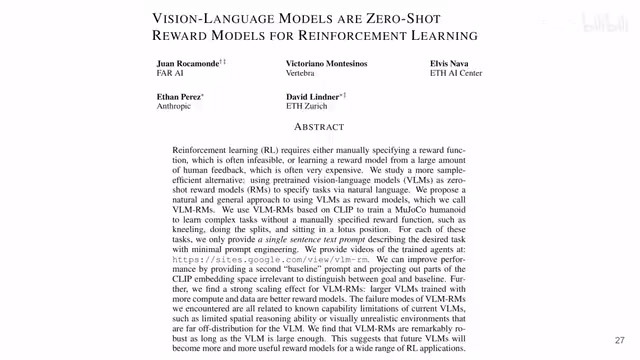
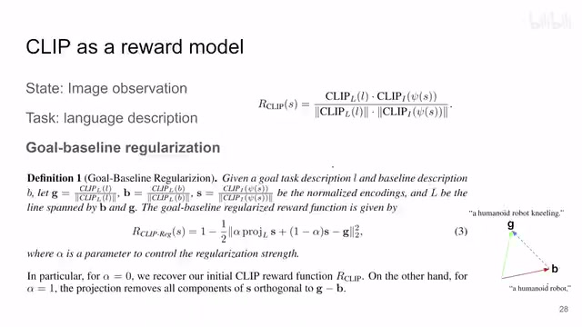
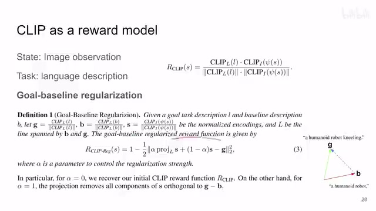
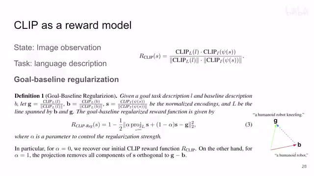
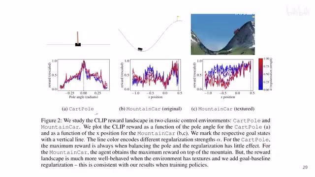
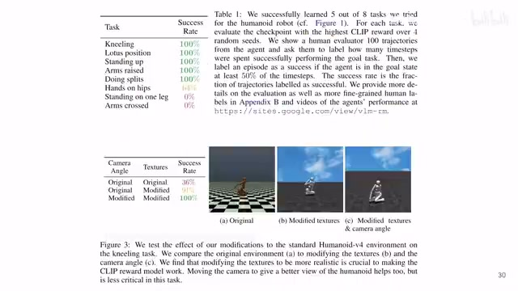

← 返回阅读库 · 原论文目录
论文讲解阅读文档 · 多模态语言模型 · v047
VLMs are Zero-Shot Reward Models for RL[2310.12921]
视频时长 00:04:41；讲解文字 2,346 字符；提取讲解画面 7 张。按视频原顺序阅读，每段文字保留时间戳。
文字来自整段视频的自动语音转写，按自然停顿分段，并与 PPT / 论文页面 / 演示画面对齐。未将讲解压缩为摘要；术语、数字和口述公式请结合画面及原论文核对。 阅读稿已校正规范部分明确术语误识别；原始逐字稿和每处修改记录另行保留。
讲解画面为源视频截图（640×360），不是可编辑 PPT 文件。全片按每秒 2 帧扫描内容变化，逐步展开页保留；连续动画保留代表画面。清晰度受源视频限制。
下载完整资料包 · 含离线 HTML、PDF、Word、全部 PPT 画面和字幕。
原论文与材料
Vision-Language Models are Zero-Shot Reward Models for Reinforcement Learning · 下载完整 PDF（18 页）
按时间阅读
00:00:00–00:00:22 · 画面 001

00:00:00–00:00:22 · 画面 001大家好,今天我们来快速说一篇论文 Vision Language Models are Zero-Shot Reward Models for Reinforcement Learning，这篇就是说当我们拿到一个 Reinforcement Learning 的任务的时候，如果我的 Reward 不好设计，那么我们直接可以用 Vision Language Models，具体来说就是一个 Clip，用它来提供这个 Reward 信号非常直接的一个思路那么我们直接来看 clip 这个东西怎么能够当做一个 reward 呢最简单的就是你的当前这个 state 是一个 image based 的那么一个 state 它是否跟我们的这个 language 描述的这个 goal 所匹配越匹配就说明你越接近终点那么你这个 reward 就高所以呢做这就是用了一个最常规的一个 cosine similarity 来做这个事情
00:00:22–00:02:04 · 画面 002

00:00:22–00:02:04 · 画面 002你的 language 就是你对目标的描述,一句话送到这个 text encoder 里面,你的 observation,你的 image observation 送到这个 image encoder 里面,那么这个相似的程度用来做 reward,但是真的能有这么好的事情吗,对吧,你这么简单的这么一个 formulation,它就能 work 吗,实际并不是的,那据悉来说呢,作者对它进行了更进一步的设计,这里呢,作者提出了这个 Goal-Baseline Regularization,
对于我当前的这个任务的一个目标,我有一个文字的描述,这个 L,然后呢,baseline 就是我一开始对这个起始的状态的描述,我就把它叫做这个 B,那就最简单的来说,就是比如说我一个人形的机器人,一开始呢,它就是一个人形的机器人,我想让它跪下,就是说一个人形的机器人,它跪下了,这个呢,就是我们的目标,这个呢,就是我们的 baseline,然后呢,把它们送到这个 text encoder 里面,归一化,对吧,你就得到了一个 vector,同时呢,你任何的一个 state 送到这个 vision encoder 里面,那得到一个向量,然后归一化,对吧,那么有这三个东西,然后开始组合,就是从你的 baseline 这里伸出一条向量来,到这个 goal 这个地方,在 latent space 里面有这么一条向量,其实就是这个 goal 减去这个 baseline,然后呢,你不是有你的 state 吗,它的这个 reward 设计成这个样子,一减去这个 mse,那这个里面,这个 alpha 是个 hyperparameter,控制这两项的比例,
00:02:04–00:02:08 · 画面 003

00:02:04–00:02:08 · 画面 00300:02:08–00:03:12 · 画面 004

00:02:08–00:03:12 · 画面 004你看这两项线性插值,这么一个比例,那后面这项好理解,就是你的这个 state,它的这个 vector,那前面这一项呢,就是你的这个 state vector 在 b 到 g 这个方向的一个投影,做完投影之后的那个 vector,那这里做着的 intuition 就很明显了,就是我只关心 state 在从 baseline 到 goal 这个方向上的投影,那跟这个方向垂直的这个 vector，我认为它跟我们的 reward 是没有意义的，当然这个假设作者也说了，它不一定是真是这样子的，或者说它肯定不是这个样子的，因为我们在 latent space 里面哪有这么好的事情就你直接画一条线就好了，实际上它这个真正的 reward 哪怕是在 latent space 里面，它也可能是一条弯弯曲曲的一条线，就拐着弯的，就最后呢
到了这个 goal 这里，所以呢这个只是作者的一个美好的设想，那么然后呢就是把这两项对吧，我们之前说了线性插值插起来，用这个表达式算出来一个 reward，那有了这个 reward 你就正常的去拿它去做训练就好了嘛，那么这个就是本文核心的技术，你也没有动这个 Vision Language Model，你就直接把 clip 拿过来用
00:03:12–00:03:45 · 画面 005

00:03:12–00:03:45 · 画面 005那我们来看到作者的实验部分首先是最简单的两个这个 CartPole 和这个 mountain car 然后这边呢也是这个 mountain car 只不过是把里面的图像的各种材质换成更加真实的材质那作者的观察发现呢这个 CartPole 和这个换过材质的 mountain car 它是可以解决的虽然我也没有看到它究竟训练了多少步它的 reward curve 是什么样的但是作者说它是能解决的但是呢这个 mountain car 它解决不了作者说可能是因为它太抽象了，对吧，clip 就没有见过这个东西，你还不训练 clip 这个当然也是不意外的，那么当然最重点的还是后面这个部分，像这个人形机器人的部分，本身 reward 就不好设计，它就没有一个 ground-truth reward，那么这种情况下就是 language 真正发挥用处的地方，你看到作者让这个机器人去做不同的任务对吧，它的成功率
00:03:45–00:04:41 · 画面 006

00:03:45–00:04:41 · 画面 006那么当然这些结果也是精选过的对吧，你还是看一个乐子就好，但是重点是告诉我们说 Vision Language Model 它很自然的其实就可以成为作为多种任务情况下它特别是当你的 Reward 不清楚的情况下或者说是因为你的任务的特性不太好设计这个 Reward 的时候它可以作为一种方案提供一种 reward 来帮助你去训练，那么当然在本文里面做的 clip 是没有动的，那很自然的就会想到我如果去训练他会怎么样呢等等等等，这些呢感兴趣的朋友呢你可以进一步详细的看他的文章然后呢做出自己的改进，好的，那么以上就是我对这个文章的一个快速的梳理啊，那么感谢您的收看，再见
00:04:41–00:04:41 · 画面 007
00:04:41–00:04:41 · 画面 007转写与来源说明 · 0 个自动复核提示
保留 12 个原始语音片段，0 个片段触发自动复核提示。提示仅用于定位可能的术语、重复或识别问题，不等于已确认错误。
讲解画面为源视频截图（640×360），不是可编辑 PPT 文件。全片按每秒 2 帧扫描内容变化，逐步展开页保留；连续动画保留代表画面。清晰度受源视频限制。
原视频：paper/合集_2026-10-16_多模态语言模型/[论文速览]VLMs are Zero-Shot Reward Models for RL[2310.12921].mp4
SHA-256：0a968b1c8dee74e25ad4097f1fec50700146968b8d00d609121d117d5ed555eb
全文按视频语音与画面制作。原论文可从上方链接下载；完整资料包保留全文、原始逐字稿、字幕和校对记录。